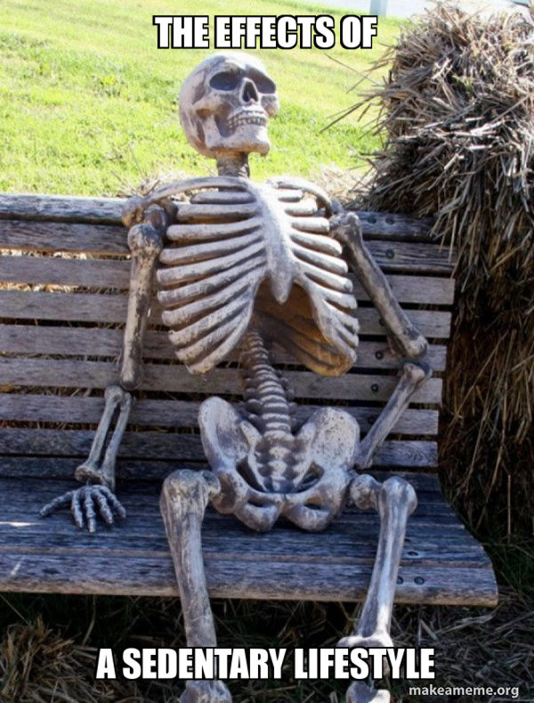
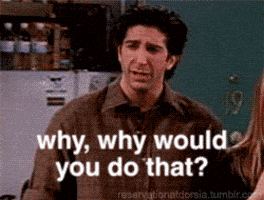
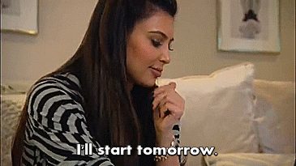
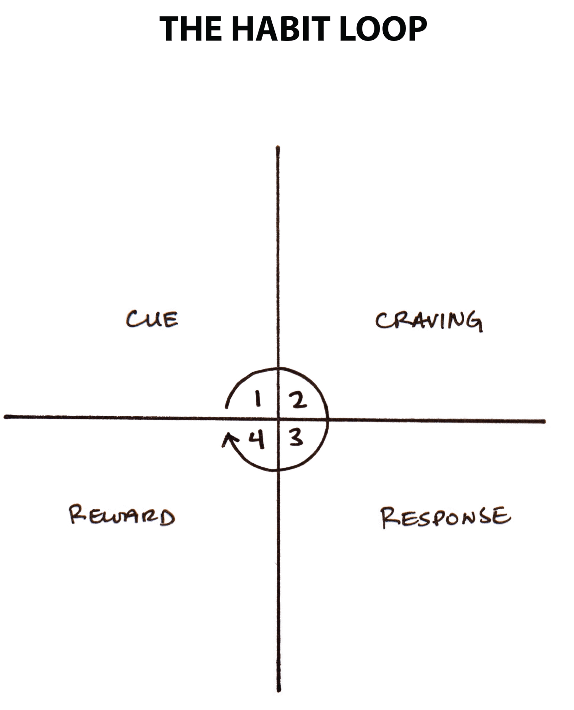

Jan – Feb 2023
Behavior Design / Mobile App
For many students and young professionals, prolonged sitting has quietly become part of daily life. Long hours of studying, working, and screen time lead to persistent discomfort and long-term health risks. Many people already feel the symptoms — neck pain, back stiffness, low energy.

They know exercise is one of the best ways to counter it. Yet despite knowing the risks and the remedy, most still struggle to build consistent movement habits. This gap between knowing and doing became the central question of this project.

Through online research, the most common explanations behind sedentary lifestyles were lack of time, lack of motivation, and limited financial access. While these reasons appeared repeatedly across articles and reports, they felt incomplete. Many people still struggled to build consistent movement habits even when they had free time, access to exercise, or the intention to improve.

Through interviews, I realized the real barrier was not simply time or motivation. Many people already understood the importance of movement, yet still struggled to act consistently because movement was not part of their daily habits, their environments often reinforced inactivity, and they lacked clear knowledge of what to do and how to start. This shifted my perspective from motivation to behavior and context.


Interview Notes

Affinity Map
From the research insights, I reframed the core question: How might we help people shift from sedentary to active behavior — without relying on motivation?
Opportunity 1:
Make action immediate and contextual.
Opportunity 2:
Offer flexible movement instead of rigid exercise.
Opportunity 3:
Build identity through habit rather than task completion.
Opportunity 4:
Reduce emotional friction so people feel supported, not pressured.
Based on the four design directions, I brainstormed a range of ideas:
Idea 1:
Smart notifications that respond to inactivity.
Idea 2:
Quick-switch activity cards for immediate decisions.
Idea 3:
AR-based movement guidance.
Idea 4:
Real-time voice feedback during activities.
Through research, I found that building new habits depends more on frequent repetition than intense effort. To support consistent movement, activities needed to be easy to start, short but complete, and embedded into daily life through clear triggers, actions, feedback, and reinforcement.
This shifted the design direction from motivation-based exercise toward low-friction habit-building.

The Habit Loop — Cue → Craving → Response → Reward (James Clear, Atomic Habits)
I also studied existing products to understand how movement, habit formation, and behavioral design could be translated into practical features and user experiences.

Emotion Map

Rapid Ideation Sketches

Habit Loop Framework

Competitor Benchmarking
StepUp is a mobile app designed to help people unlock micro exercises anytime and anywhere through low-friction, habit-centered interactions.
Habit-building loop
Instead of asking users to commit to a full workout, StepUp breaks movement into tiny, repeatable loops: a trigger reminds you, a guided action gets you moving, and instant feedback keeps you going.
Zero-friction start
Every extra step between intention and action is a chance to quit. StepUp removes decision fatigue by letting users start moving in one tap — no planning, no setup, no excuses.
Contextual movement
At a desk, on a commute, or in a small apartment — StepUp adapts to where you are and what you're comfortable with, so there's always something you can do right now.
This project started from a real problem I saw in someone close to me — and honestly, in myself too. I was never the kind of person who exercised. The idea of going to a gym or following a workout routine felt distant and overwhelming.
But through this design process, I began applying the same principles I was designing for: start small, remove friction, and let repetition build identity. I stopped thinking about "working out" and started just moving — a stretch here, a walk there, a few minutes of activity between tasks.
Over time, those small actions became habits. And those habits changed how I saw myself. Today, I exercise every day — not because I suddenly found motivation, but because movement became a natural part of my life. That shift is exactly what StepUp was designed to create.
The biggest takeaway: designing for behavior change taught me that the best solutions don't demand willpower — they make the right action the easiest one.